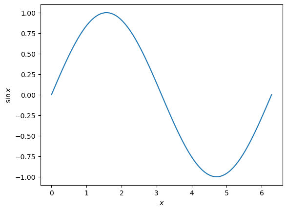
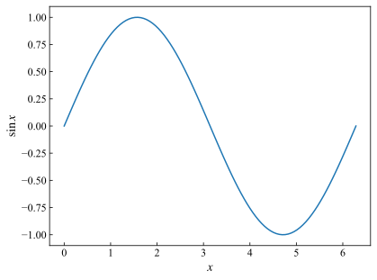

系统工具
[2]:
import quante.basicfun as bf
代码调试工具
显示代码运行运行的时间
[4]:
import numpy as np
def singlestep(a, i, j):
a = np.sin(a)
return a + i + j
def myfun(dim):
mat = np.random.randn(dim,dim)
for i in range(dim):
for j in range(dim):
mat[i,j] = singlestep(mat[i,j], i, j)
return mat
[5]:
bf.test_time(myfun, 100, save=False)
Timer unit: 1e-07 s
Total time: 0.0240506 s
File: C:\Users\hzhu\AppData\Local\Temp\ipykernel_22076\4146491145.py
Function: myfun at line 7
Line # Hits Time Per Hit % Time Line Contents
==============================================================
7 def myfun(dim):
8 1 1920.0 1920.0 0.8 mat = np.random.randn(dim,dim)
9 101 232.0 2.3 0.1 for i in range(dim):
10 10100 24009.0 2.4 10.0 for j in range(dim):
11 10000 214343.0 21.4 89.1 mat[i,j] = singlestep(mat[i,j], i, j)
12 1 2.0 2.0 0.0 return mat
显示了每一行运行需要的时间
[8]:
bf.test_time(myfun, 100, save=False, inner_func_list=[singlestep], timer_unit=0.001)
Timer unit: 0.001 s
Total time: 0.0132481 s
File: C:\Users\hzhu\AppData\Local\Temp\ipykernel_22076\4146491145.py
Function: singlestep at line 3
Line # Hits Time Per Hit % Time Line Contents
==============================================================
3 def singlestep(a, i, j):
4 10000 9.5 0.0 71.5 a = np.sin(a)
5 10000 3.8 0.0 28.5 return a + i + j
Total time: 0.0325813 s
File: C:\Users\hzhu\AppData\Local\Temp\ipykernel_22076\4146491145.py
Function: myfun at line 7
Line # Hits Time Per Hit % Time Line Contents
==============================================================
7 def myfun(dim):
8 1 0.2 0.2 0.6 mat = np.random.randn(dim,dim)
9 101 0.0 0.0 0.1 for i in range(dim):
10 10100 2.3 0.0 7.1 for j in range(dim):
11 10000 30.1 0.0 92.2 mat[i,j] = singlestep(mat[i,j], i, j)
12 1 0.0 0.0 0.0 return mat
也可以显示内部某个函数的时间，以及调整时间单位
查看变量占用的内存
python 自带的内存大小函数只会显示指针占用内存
[9]:
a = [np.random.rand(1000,1000)]
import sys
sys.getsizeof(a)
[9]:
64
使用 test_memory 可以正确显示内存占用大小
[10]:
bf.test_memory(a)
7.63 MB
数据保存
[11]:
a = np.random.randn(10,10)
bf._save_hdf5("data.h5", a) # 这样会建立一个 data.h5 文件，里面包含一个名为 "data" 的数据集
[13]:
a = bf._load_hdf5("data.h5", "a") # 这样可以得到储存的数据
也支持多个数据的的保存和导入
[23]:
a = [1,2,3]
b = np.random.randn(10,10)
# c, d 不能被 hdf5 直接保存，将会被序列化，失去可视化的效果
c = [a, b]
class D:
def __init__(self, x):
self.x = x
d = D(10)
bf._save_hdf5("data.h5", a, b, c, d)
[24]:
a, b, c, d = bf._load_hdf5("data.h5", "a", "b", "c", "d")
如果涉及到 group，可以使用更基本的：
[25]:
a = np.random.randn(10,10)
bf.save_hdf5("data.h5", "/", {"a": a})
[25]:
('data.h5', '/')
[26]:
a = bf.load_hdf5('data.h5', '/', 'a')
这种写法下，如果需要 load 更多元素，可以：
[27]:
a = bf.load_hdf5('data.h5', '/', '/')
保存日志
通过在项目最开始运行：
[28]:
bf.set_logging(savelog=True, logtime=True)
可以将所有 bf.println 的输出保存到 log 文件中，同时记录时间。
报错信息同样会记录到 log 文件中
[31]:
bf.println("hello world")
[34]:
bf.set_logging(savelog=False, logtime=True)
bf.println("hello world")
2024-11-04 16:10:23,924: hello world
[35]:
bf.set_logging(savelog=False, logtime=False)
bf.println("hello world")
hello world
bf.set_logging(savelog=False, logtime=False) 时，println 与普通 print 功能相似，并且可以输出变量名：
[39]:
a = [1,2,3]
b = [4,5,6]
bf.println(a, b)
a: [1, 2, 3], b: [4, 5, 6]
目前，println 的参数必须在同一行，否则会报错
[38]:
a = [1,2,3]
b = 1
bf.println(a,
b)
SyntaxError
([1, 2, 3], 1)
画图预设
matplotlib 默认的画图风格为：
[42]:
import matplotlib.pyplot as plt
x = np.linspace(0, 2*np.pi, 100)
y = np.sin(x)
plt.plot(x, y)
plt.xlabel('$x$')
plt.ylabel('$\sin x$')
[42]:
Text(0, 0.5, '$\\sin x$')

通过 set_matplotlib 可以改变风格：
[43]:
bf.set_matplotlib()
[44]:
import matplotlib.pyplot as plt
x = np.linspace(0, 2*np.pi, 100)
y = np.sin(x)
plt.plot(x, y)
plt.xlabel('$x$')
plt.ylabel('$\sin x$')
[44]:
Text(0, 0.5, '$\\sin x$')
